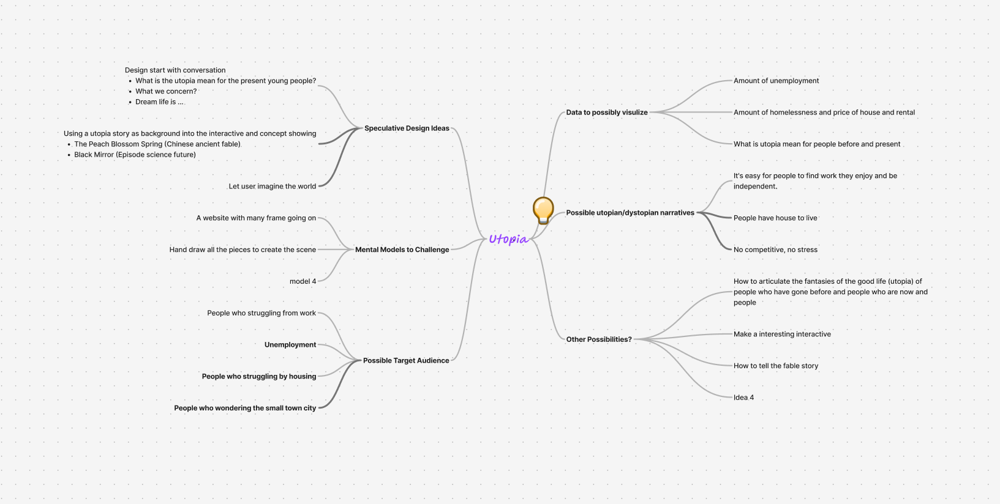
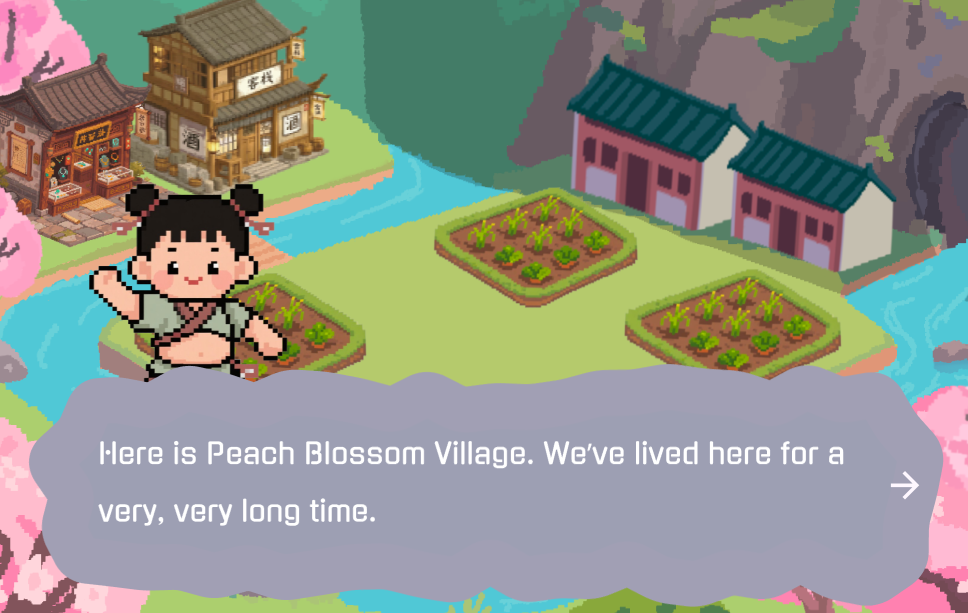
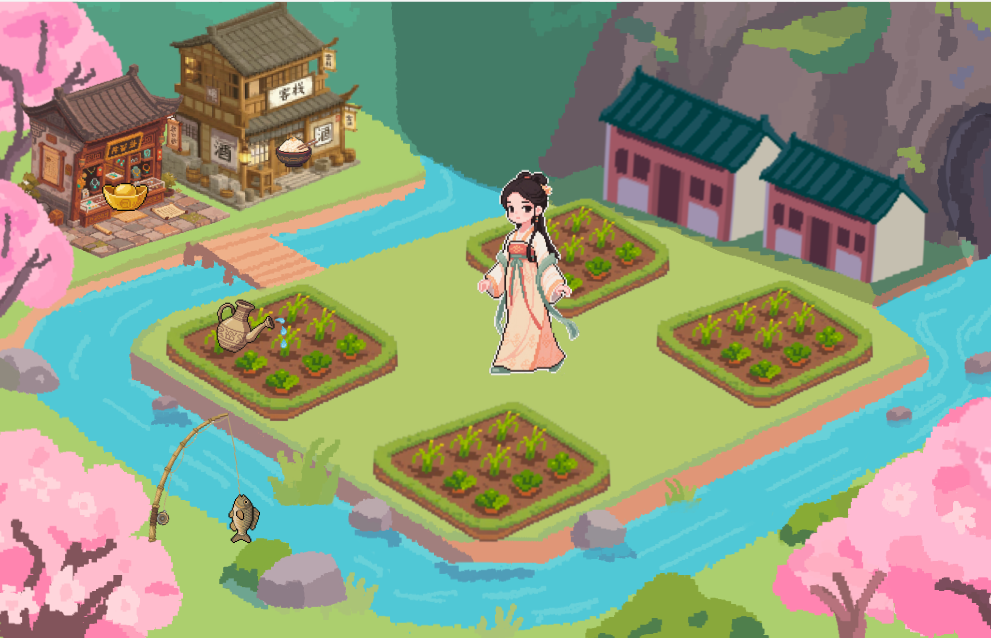
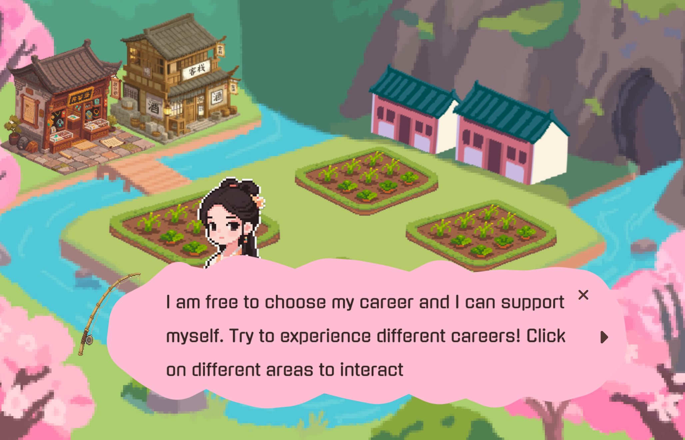
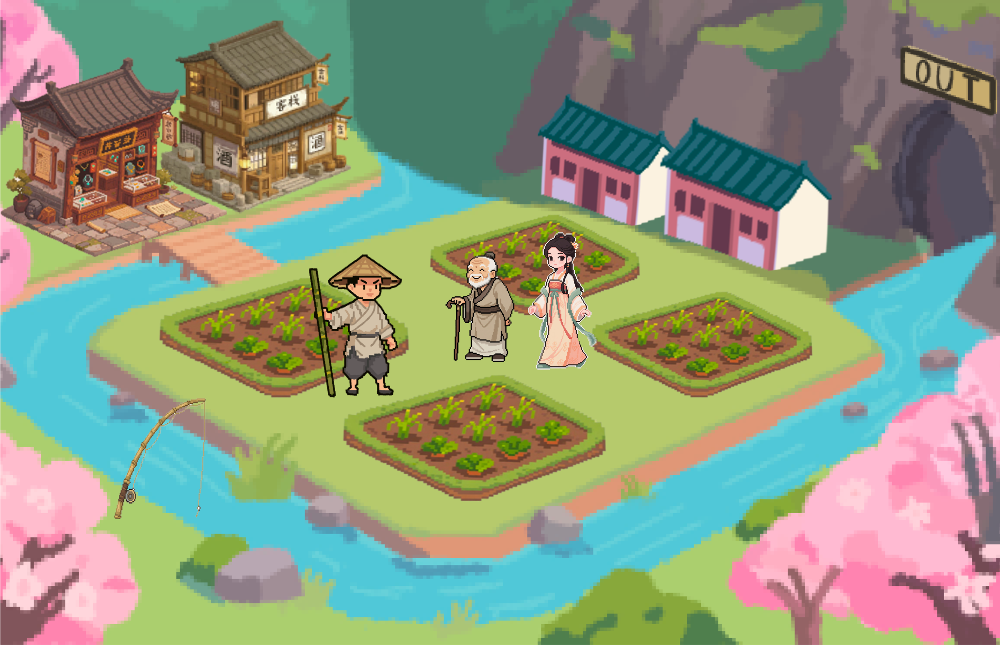

Peach Blossom Spring: A Digital Utopia is an interactive web project inspired by the ancient Chinese fable “Tao Hua Yuan Ji” (The Peach Blossom Spring). The project reimagines a secluded, self-sustaining village where users can explore an ideal world free from the stress of modern urban life.
The goal of this project is to offer a sense of comfort, hope, and grounded possibility. It introduces the idea that a fulfilling life doesn't have to rely on wealth, status, or big city resources — stability, mutual care, and self-sufficiency can also define a meaningful future.
Through exploring the village, talking to residents, and making small but meaningful decisions (such as choosing a job or home for a character), users are gently invited to reflect on alternative ways of living and reimagine their own aspirations.
The project began with the idea of creating a game — a format that could provide not only interactivity but also emotional engagement through exploration and decision-making. I chose The Peach Blossom Spring as the narrative foundation because it is a story that many Chinese students read during middle school, including myself. It carries strong cultural significance and emotional familiarity, making it the perfect vehicle for a sense of nostalgia.
While I initially considered building a more fantastical or stylized interpretation of the story, my research shifted my direction. I began to see that the contrast between modern chaos and the village's simplicity was the true strength of the narrative. This led me to focus on a calmer user flow and minimalistic interface design, using pixel art not just as a stylistic choice, but as a way to evoke childhood memories and connect users emotionally with the story's historical and cultural roots.
The visual design of Peach Blossom Spring is rooted in pixel art to evoke a sense of nostalgia, especially for users who studied the original fable during middle school. The project blends retro game aesthetics with traditional Chinese elements — such as rivers, tiled roofs, and blooming peach trees — to create a tranquil and immersive atmosphere. The soft color palette features greens, browns, and pinks to reflect a harmonious rural environment. I chose the Gugi typeface for dialogue due to its rounded, playful structure, which adds a warm and approachable tone to the storytelling.
Initially, I used a gray color for the dialogue box, but during feedback sessions, classmates pointed out that it clashed with the stone textures in the background, making the interface feel disconnected. Taking their advice, I changed the dialogue box color to a soft pink inspired by the peach blossom trees. This adjustment not only improved visual harmony but also reinforced the thematic symbolism of the peach blossom — a central motif of the story. The updated color blends more naturally into the scene, enhancing both readability and emotional resonance.
In the progress of code creating, I found that user should close the dialogs to go to the main page. Also the close button for each game section.
I realized that the user flow needed more clarity and control. Originally, dialogs would appear but offered no clear way to move forward, which created confusion. To improve the experience, I added close buttons for each dialog and interactive section. This gave users more agency and made transitions to the main page and between sections more intuitive.
Based on peer feedback, I redesigned the interaction with the lady character. Initially, clicking the lady simply triggered a short dialog, but it felt too passive and disconnected from the rest of the gameplay. I replaced this with a timed clicking mini-game: when users click on specific objects related to her scene, they earn points within a limited time. This change increased engagement and aligned better with the interactive rhythm of the rest of the experience, turning a passive moment into an active challenge.
Working on Peach Blossom Spring has been a deeply meaningful experience for me. I'm proud to have taken a classic story from Chinese literature that I once studied in school and reintroduced it through a modern, interactive format. Sharing this ancient tale with new audiences — especially those who may never have encountered it — allowed me to honor cultural memory while reimagining it through design.
Beyond nostalgia, this project also became a platform to express ideas I care about: women’s independence, youth employment challenges, and the ideal of a dignified retirement. While the story is not about a futuristic society, it invites players to reflect on what kind of life they truly want — one driven by intensity and ambition in the city, or one centered on peace, care, and self-sufficiency in a rural world. My goal is for each player to walk away not just with a beautiful experience, but with new questions about how they define happiness and fulfillment.